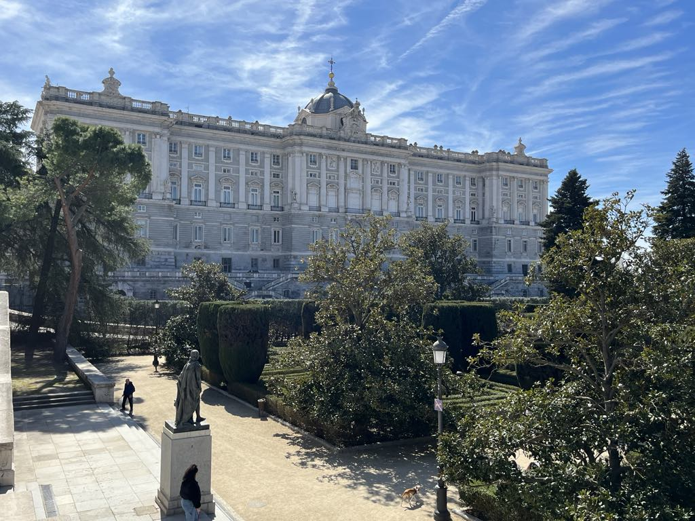

One of the best places to visit is Retiro Park. It’s a large and peaceful park in the center of the city. You can walk through the trees, relax by the lake, or rent a small boat and enjoy the water. It’s a great spot for both locals and tourists who want to take a break from the busy streets.
Next, visit the Royal Palace – one of the most beautiful buildings in Madrid. It’s the official residence of the Spanish royal family, although they don’t live there now. You can take a tour inside and see the grand rooms, elegant furniture, and old paintings. The views from the square outside are also amazing.
If you love art, don’t miss the Prado Museum. It has one of the most important art collections in the world, including famous works by artists like Velázquez and Goya. Even if you're not an art expert, it’s worth a visit to experience the culture and beauty of Spanish history.


For shopping and a true city vibe, go to Gran Vía. This busy street is full of shops, restaurants, cafés, and theatres. It’s the perfect place for walking, watching people, or catching a musical or movie.
Another great spot is Plaza Mayor, a large and beautiful square surrounded by historic buildings. You can sit at one of the outdoor cafés, drink coffee, and enjoy the atmosphere.
No matter what you’re interested in, Madrid has a lot to offer. Every street has a story, and every place invites you to explore more.
Top places to visit
Palacio de Madrid
Tempel van Debod
Parque del Buen Retiro
Plaza Mayor